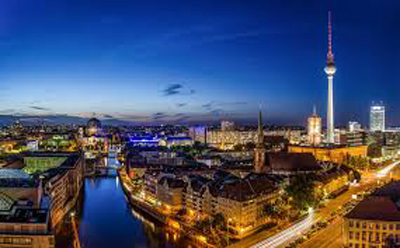

Berlin

Berlin är huvudstad i Tyskland och dess folkrikaste stad med 3,42 miljoner invånare (2013)[5]. Inräknat förorter belägna utanför stadsgränsen har staden omkring 4,4 miljoner invånare. Berlin utgör även en delstat i Tyskland, förbundslandet Berlin. Staden är med sina 892 kvadratkilometer[1] Tysklands största stad till ytan.
Berlin är genom sitt kulturella och historiska arv en av Europas mest kända och besökta metropoler.[6] Berlin är en betydande trafikknutpunkt och ett viktigt ekonomiskt och kulturellt centrum i Tyskland och Europa.[7] Institutioner som universitet, forskningscentrum, teatrar, museer men också festivaler, nattlivet och arkitekturen i Berlin har ett världsrykte. Historiskt har Berlin varit huvudstad i flera tidiga historiska tyska stater, som Mark Brandenburg, Preussen, Kejsardömet Tyskland, Weimarrepubliken, Nazityskland och Östtyskland. Berlin är sedan återföreningen den 3 oktober 1990 det återförenade Tysklands huvudstad.[8] Från Förbundsrepubliken Tysklands grundande 1949 hade Bonn fungerat som de facto huvudstad (korrekt: regeringssäte, ty: vorläufige Hauptstadt) i Västtyskland och Östberlin som huvudstad i Östtyskland. Från krigsslutet 1945 till 1949 var Berlin en av de fyra segermakterna besatt stad.
Den vanligaste förklaringen till namnet Berlin är att det kommer av berl-, som betyder 'träsk' eller 'våtmark' på den västslaviska dialekt som talades i området före den tyska kolonisationen under 1200-talet. Detta kan möjligen syfta på de våtmarker som då fanns i området omkring nuvarande Alexanderplatz.[9]
Enligt en annan teori uppstod namnet Berlin ur det slaviska ordet ber som betydde 'björnens ande', samt berloga, vilket betyder 'björnens ide'[10].[källa behövs]
Berlins stadsvapen, björnen, Der Berliner Bär, är dock yngre än stadens namn; det äldsta kända sigillet med Berlinbjörnar är från 1280.[11][12] Hur björnen ursprungligen kopplades till Berlin vet man inte säkert idag, men troligtvis handlar det om ett talande vapen, en under medeltiden populär metod där man valde vapen efter ljudlikheten med stadens namn; det tyska ordet för björn är Bär.[11][12]
Brandenburger Tor byggdes mellan 1788 och 1791 efter ritningar av Carl Gotthard Langhans och står idag som en världskänd symbol för Berlin. Triumfbågen hämtar inspiration från propyléerna i Aten och kröns av en staty av Johann Gottfried Schadow, föreställande en quadriga vilken framförs av segergudinnan Victoria. Fram till återföreningen låg Brandenburger Tor vid gränsmuren mellan de bägge stadshälfterna. Väster om porten finns Berlins stora stadspark Tiergarten och monumentet Siegessäule som man även kan gå upp i. Strax norr om Brandenburger Tor ligger riksdagshuset samt alla nybyggda kvarter som inhyser de tyska regeringsdepartementen. Den 27 februari 1933 brann riksdagshuset med förödande politiska konsekvenser som följd, och låg även i ruiner 1945. Tysklands förbundspresident har sitt säte i Schloss Bellevue invid floden Spree. I öster ansluter paradgatan Unter den Linden, som sträcker sig fram till torget Schloßplatz och kyrkan Berliner Dom.
Längs Unter den Linden ligger även Madame Tussauds vaxkabinett, som också har en omdiskuterad figur av den kontroversielle Hitler. Andra platser av intresse är Bebelplatz, operan Deutsche Staatsoper som byggdes 1743 i rokokostil, Tysklands största bibliotek, den stora vapenkammaren (Zeughaus) som idag inrymmer Deutsches Historisches Museum samt kyrkan Hedwigs-Kathedrale som är säte för Berlins katolska stift. Här finns även Berlins första universitet, Humboldt-Universität, där många världskända tyska vetenskapsmän har studerat eller forskat. En bit längre söderut ligger torget Gendarmenmarkt med bl.a. ett konserthus och två kyrkor som under 1600-talet var centrum för stadens hugenotter.
Den välkända avenyn Kurfürstendamm (Ku'damm) erbjuder talrika hotell, affärer och restauranger. I den östra änden står Kaiser-Wilhelm-Gedächtniskirche kvar med de stora skador som kyrkan fick under andra världskriget. I närheten hittar man KaDeWe (Kaufhaus des Westens), som är Europas näst största varuhus efter Harrod's i London. Området mellan KaDeWe på Wittenbergplatz förbi Breitscheidplatz och ner på Kurfürstendamm är det kommersiella centrat i västra Berlin. Många turister besöker även djurparken Zoologischer Garten som ligger bredvid järnvägsstationen med samma namn.
Runt Oranienburger Straße i stadsdelen Mitte levde före andra världskriget många judar och deras andliga centrum var synagogan från 1866. Byggnaden fick stora skador under andra världskriget men återuppbyggdes. Norr om synagogan ligger Berlins äldsta judiska begravningsplats. Jüdisches Museum Berlin hittar man däremot i stadsdelen Kreuzberg. I närheten av Oranienburger Straße ligger torget Hackescher Markt med många restauranger, uteserveringar och evenemang.
Öster om floden Spree ligger det stora torget Alexanderplatz (i folkmun "Alex") med många affärer och restauranger. En välkänd mötesplats är världstidsklockan (Weltzeituhr) och alldeles bredvid reser sig TV-tornet (Fernsehturm), som med sina 368 meter är Tysklands högsta byggnad. Alexanderplatz var centrum i Östberlin under DDR-tiden. Även Berlins parlamentsbyggnad (Rotes Rathaus) finns i området och kvarteret Nikolaiviertel tillhör stadens äldsta delar. Den som vill uppleva vardagen i den östtyska kommuniststaten DDR hittar till DDR-Museum. I hotellet SAS Radisson kan man åka hiss igenom ett jättestort akvarium. I dagsläget är trendiga Prenzlauer Berg med affärsgatan Schönhauser Allee samt även Friedrichshain i östra Berlin några av de mest populära stadsdelarna.
Potsdamer Platz anlades under Fredrik Vilhelm I av Preussen och var länge en knutpunkt för de större vägarna mellan Berlins olika delar. Andra världskrigets bombningar lade området i ruiner och under fyrtio år låg det helt öde i det så kallade ”ingenmansland” invid Berlinmuren. Idag ser man murens sträckning genom en linje med gatstenar som har placerats i asfalten. Under 1990-talet började Potsdamer Platz åter att resa sig med nya postmodernistiska skyskrapor och shoppingcenter i betong och glas. Området har blivit Berlins eget ”Manhattan”, med bl.a. det spektakulära Sony Center, och ännu fler byggnader är under uppförande. I närheten hittar man Topographie des Terrors som är en utställning om nazismens brott.
I området mellan Potsdamer Platz och Pariser Platz, där Brandenburger Tor är beläget, ligger det enorma Denkmal für die ermordeten Juden Europas. Det är ett spektakulärt minnesmärke över Europas mördade judar, bestående av ett stort antal rektangulära betongblock. Längs gatan In den Ministergärten ligger flera tyska förbundsländers/delstaters representationskontor. I det östra hörnet av samma gata visar en skylt var under de intilliggande bostadshusen Hitlers bunker fortfarande döljer sig. Närmaste tunnelbanestation heter Mohrenstraße och det påstås att perrongen är utsmyckad med röd marmor från Hitlers ökända nya rikskansli, som revs efter andra världskriget.
Av Berlinmuren finns idag bara några korta avsnitt kvar. Mest känd är sträckan mellan Warschauer Straße och Ostbahnhof, som bär namnet East Side Gallery och är utsmyckad med målningar av olika konstnärer. Den berömda gränsstationen Checkpoint Charlie har monterats ned från sitt ursprungliga läge och står nu utanför Mauermuseum, som visar alla flyktförsök under och över muren, på Friedrichsstraße.
I stadsdelen Charlottenburg finns Charlottenburgs slott med en stor park i anslutning samt Berlins Olympiastadion från 1936. Bredvid slottet Charlottenburg finns även flera mindre slott i stadsdelen Zehlendorf. Dessa blev 1990 tillsammans med olika slott kring staden Potsdam upptagna på Unescos världsarvslista. Andra världsarv i staden är Berlins modernistiska bostadsområden som består av 6 olika kvarter samt Museumsinsel (se under museer).
Shopping[redigera | redigera wikitext]
I västra citykärnan finns Berlins största och längsta shoppingboulevard Kurfürstendamm. Centrumet på denna gata ligger vid Minneskyrkan. Även närliggande gator såsom Uhlandstrasse och Fasanenstrasse har mycket shopping. Vid Wittenbergplatz finns även Europas näst största varuhus KaDeWe. I centrala citykärnan Mitte är Friedrichstrasse den största affärsgatan. Mycket butiker finns även vid Potsdamer Platz såsom Potsdamer Platz Arkaden samt Mall of Berlin som är en av Berlins största gallerior. I östra citykärnan, i närheten av Alexanderplatz finns en av Berlins största inomhusgallerior Alexa i fem plan samt även varuhuset Galeria Kaufhof.
Östra Berlins präktigaste shoppingboulevard är Schönhauser Allee som även den har en stor inomhusgalleria. I södra Berlin är Schlosstrasse den längsta shoppinggatan med galleriorna Das Schloss samt Boulevard Berlin. Större affärscentrumen i södra Berlin är även Mehringdamm samt Hermannplatz. I väst finns Wilmersdorfer Strasse med flera butiker samlade. Second hand och lite mer udda affärer finns bland annat i Kreuzberg och Prenzlauer Berg. I norra Berlin finns en shoppinggalleria vid stationen Gesundbrunnen samt söder om stan finns Gropius Passagen.
Parker och sjöar[redigera | redigera wikitext]
I Berlins östra och västra stadsdelar finns stora skogsområden och i stadens centrum förekommer stora parkanläggningar. Vid de flesta gator finns träd längs vägkanten och på så sätt är Berlin en förvånansvärt grön stad.
Tiergarten är med 210 hektar Berlins näst största park och ligger väster om Brandenburger Tor. Parken var tidigare en skog där preussiska adelsmän red eller jagade. Under Fredrik II av Preussen blev området omgestaltad och liknar idag mer en trädgård. Parken genomskärs från öst till väst av en stor väg, Straße des 17. Juni, som korsar vid rondellen Großer Stern några mindre vägar. I rondellens mitt står minnesmärket Siegessäule som restes efter Tysklands enande och de tre krig som fördes 1864-1871. Straße des 17. Juni var under många år platsen där technofestivalen Love Parade ägde rum.
En av Kreuzbergs mest kända och omtyckta parker är Viktoriapark, som har vattenfall samt utsiktsplattform med vy över södra Berlin. Andra vackra parker i Berlin är Rudolph-Wilde-Park i Schöneberg samt Volkspark Friedrichshain i Friedrichshain.
På den nedlagda flygplatsen Berlin-Tempelhofs område, Tempelhofer Feld, ligger idag Tempelhofer Freiheit, eller Tempelhofer Park, som med sina 300 hektar är Berlins största park- och rekreationsområde.
En annan betydande parkanläggning är Treptower Park i Berlins sydöstra delar. I denna park ligger ett stort sovjetiskt monument över stupade soldater i röda armén under andra världskriget.
Ett viktigt rekreationsområde är Berlins botaniska trädgård i stadsdelen Lichterfelde. Med en yta av över 43 hektar och ungefär 22 000 olika växter är denna park Europas största botaniska trädgård. Här finns även världens största växthus.[29] Byggnaden är 60 meter lång, 30 meter bred och 25 meter hög.
När berlinarna vill bada utomhus och roa sig med vattensporter beger de sig gärna till Wannsee och Nikolassee i stadens sydvästra del eller Grünau och Köpenick i östra delen av staden.